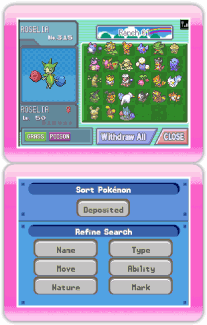

Avant de retirer des Pokémon du Ranch, pense à lire le
chapitre 12. Procédures de connexion à une DS.
 Écran
de la DS Sélectionne Withdraw Pokémon from the Ranch (retirer un
Pokémon du Ranch) dans le menu DS. L'écran présenté à droite sera
affiché.
Écran
de la DS Sélectionne Withdraw Pokémon from the Ranch (retirer un
Pokémon du Ranch) dans le menu DS. L'écran présenté à droite sera
affiché.
 Écran
de la DS Sélectionne le Pokémon que tu veux retirer du Ranch et
transférer vers la DS. Lorsque tu sélectionnes WITHDRAW (retirer),
un message s'affiche: To which Box would you like to deposit? (dans
quelle boîte le déposer?). Sélectionne une boîte et tu peux retirer
le Pokémon vers cette boîte.
Écran
de la DS Sélectionne le Pokémon que tu veux retirer du Ranch et
transférer vers la DS. Lorsque tu sélectionnes WITHDRAW (retirer),
un message s'affiche: To which Box would you like to deposit? (dans
quelle boîte le déposer?). Sélectionne une boîte et tu peux retirer
le Pokémon vers cette boîte.
* Tu ne peux pas retirer les Pokémon
de Hayley.
 Écran de la DS Lorsque tu as
terminé de retirer les Pokémon, sélectionne Close (fermer). Un
message s'affiche: Quit Withdraw operations? (arrêter les opérations
de retrait?). Sélectionne Yes (oui) pour retourner au menu principal
DS.
Écran de la DS Lorsque tu as
terminé de retirer les Pokémon, sélectionne Close (fermer). Un
message s'affiche: Quit Withdraw operations? (arrêter les opérations
de retrait?). Sélectionne Yes (oui) pour retourner au menu principal
DS.
 Écran de la DS Lorsque tu
sélectionnes See ya! (au revoir!) dans le menu principal DS, un
message s'affiche: Would you like to save and quit? (sauvegarder et
quitter?). Sélectionne Yes (oui) pour mettre fin à la connexion.
Écran de la DS Lorsque tu
sélectionnes See ya! (au revoir!) dans le menu principal DS, un
message s'affiche: Would you like to save and quit? (sauvegarder et
quitter?). Sélectionne Yes (oui) pour mettre fin à la connexion.
Quand l'écran affiche Turning off the
power. Appuie sur  pour quitter.
pour quitter.
Fonctions utiles lors d'un retrait
 Écrans
de la DS Lorsque tu retires des Pokémon du Ranch, tu peux trier les
Pokémon à retirer ou faire une recherche plus fine sur l'écran
tactile de la DS. Tu peux trier ou rechercher un Pokémon selon les
critères suivants.
Trier les Pokémon
| Basic (base) |
Deposited (déposé) |
Pokédex No.(n° Pokédex) |
| Name (nom) |
Nickname (surnom) |
| Level (niveau) |
Item (objets) |
| Stats (capacité) |
HP (PV) |
Attack (attaque) |
| Defense (défense) |
Sp. Atk (att. spéciale) |
| Sp. Def (déf. spéciale) |
Speed (vitesse) |
| Other (divers) |
WT (poids) |
HT (taille) |
* Pour commencer, les Pokémon sont triés dans l'ordre des
dépôts. Sélectionne Deposited (déposé) pour choisir un autre filtre
de tri.
Recherche fine
| Name (nom) |
Recherche par nom dans l'ordre alphabétique |
| Type |
Par Type (Dark, Rock, etc.) |
| Move (capacité) |
Selon les capacités connues (Hammer Arm, Iron Tail,
etc.) |
| Ability (capacité spéciale) |
Selon les capacités spéciales (Ice Body, Stench, etc.) |
| Nature |
Selon la nature (Adamant, Rash, etc.) |
| Mark (marque) |
Selon la marque placée (cercle, triangle, etc.) |
Attention!
- Lorsque tu déposes un Pokémon dans le Ranch, ce Pokémon
disparaît de ta carte DS Pokémon Diamond ou Pokémon
Pearl.
- Lorsque tu retires un Pokémon du Ranch, il retourne sur ta
carte DS Pokémon Diamond ou Pokémon Pearl.